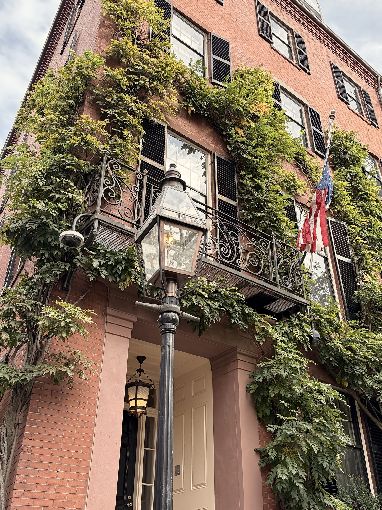

About the maker
Emilios C. Christodoulou
I grew up in Cyprus, building things out of wood for as long as I can remember.
Once a year we travelled to my grandparents' house in Pittsburgh. George Nakashima's furniture was scattered through the rooms, pieces my grandfather commissioned that turned the house into something truly its own. There was an Amish staircase I appreciated for the strength and quality of its build, and a doorway I still think about. Not far away, I had my first visit to Frank Lloyd Wright's Fallingwater, and understood how a home can bring you closer to nature without ever leaving it.
At home in Cyprus, we harvest our olive orchards every year and press our own oil. It taught me to respect olive wood and everything it can become.
Woodworking has always been a spiritual pursuit for me. Buteo Studio is how I share that feeling with you.
Emilios